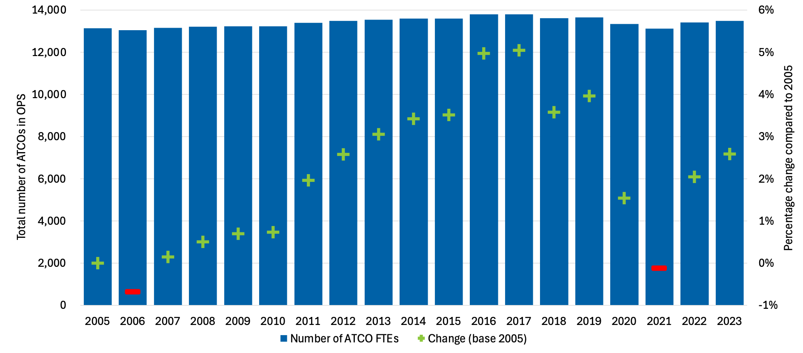

What has changed over time?
Historical workforce evidence
The long-term evolution of ATCO numbers is based on datasets extracted from the annual ACE benchmarking reports. The data in these reports covers the period from 2002 to 2023, however, some of the ANSPs in the SES area are not included in the datasets prior to 2005, thus the analysis of the total number of ATCOs on the network level focused on the years between 2005 and 2023. The overview of the evolution of ATCO numbers is shown in Figure 1 below.

The actual number of ATCOs in OPS was fairly stable throughout the 18-year period: The minimum value in 2006 was 13,051 ATCOs in OPS, while the maximum was achieved in 2017, reaching 13,803, which translates into a variation of -0.68% and +5.05% compared to the basis of 2005, respectively. These figures include all ATS units: ACCs, APPs and TWRs. Looking at the annual changes in these figures, we see that the total number of ATCOs in OPS decreased in only four years during the period: 2006, 2018, 2020 and 2021. The two most recent years were heavily affected by the COVID-19 pandemic and are thus considered outliers. The reduction in 2006 is marginal, but the year-on-year decrease of almost -1.5% in 2018 is significant. Even more so, as it cannot be correlated with any demand- or supply-side shocks or major crisis events.
In the data analysis phase of the study, we have looked at more than 20 years of data and several thousand data points. We combined the number of ATCOs in OPS, ATCO utilisation, ATCO productivity, composite flight hours and ATFM delays. Below, we provide an overview of the key takeaways from this extensive exercise.
- The evolution of the number of ATCOs in OPS clearly did not keep pace with increasing traffic demand; furthermore, most ANSPs showed significant year-on-year variations in ATCO numbers. This indicates a lack of a long-term ATCO staffing plan and/or difficulties in executing such plans. We understand that ANSPs need to commit to a steady, long-term increase in ATCO numbers, as the traffic demand is forecast to grow continuously.
- The utilisation of ATCO resources declined during the period: Most ANSPs recorded fewer hours on duty per controller in 2023 than in 2002. While this may have increased operational sustainability, it still negatively affects capacity output. Ideally, ATCO utilisation should be set at a level that is sustainable in the long term (while also accounting for fatigue management) and kept stable over the coming years.
- On the positive side, most ANSPs managed to improve ATCO productivity, an important component of capacity output. ATCO productivity must remain in the focus of ANSPs, as it can also be a cost-efficient way of improving capacity performance.
- It is clear from the datasets that the change in capacity output resulting from the evolution of ATCO numbers, ATCO utilisation and ATCO productivity was not sufficient to accommodate the growth in traffic. While there are significant local differences and positive examples, the overall picture on the network level remains alarming.
Workforce demand and supply
The first step of the root-cause analysis is to establish a quantitative understanding of the current and future European ATCO workforce situation. To do so, the supply-demand model is used to estimate the relationship between ATCO demand and ATCO supply under a range of alternative scenarios (assumptions are developed in Annex F), allowing the sensitivity of the workforce balance to different assumptions to be assessed.
Figure 13 presents the range of future ATCO workforce outcomes considered most plausible for the purposes of this study. The scenarios combine baseline traffic demand assumptions with the no productivity gains and historical recruitment rate trajectories, thereby defining a realistic range of potential workforce requirements over the projection period and illustrating the corresponding evolution of the ATCO gap.

Historical data show that ATCO availability was already insufficient to fully meet workforce requirements until the COVID-19 period, when the collapse in traffic temporarily reduced demand. However, the subsequent recovery rapidly re-established the imbalance between workforce demand and workforce supply, creating a structural shortage across the European ATM network.
The projected evolution of demand is highly dependent on productivity assumptions. Under the No Productivity Gains scenario, workforce requirements continue to increase throughout the projection period, eventually exceeding 11,000 ATCOs by 2036.
The assumptions represented in Figure 13 were selected because they provide the most realistic reference case for assessing the future evolution of the ATCO gap. The Historical Recruitment Rate reflects the recruitment levels currently achieved across the European ATM network and therefore represents the continuation of current workforce trends. Similarly, the Baseline Traffic Demand scenario is consistent with the traffic assumptions commonly used for planning purposes and provides a reasonable representation of expected network growth.
The No Productivity Gains assumption requires additional explanation. Whilst more optimistic productivity scenarios were also assessed as part of the modelling exercise, their realisation would depend on the sustained delivery of productivity improvements over an extended period. As no major technological, operational or organisational developments are currently expected, the ATCO productivity is not expected to fundamentally change within the study horizon. As a result, assuming no material productivity gains provides a prudent and realistic baseline against which future workforce requirements can be assessed.
Consequently, Figure 13 should not be interpreted as a worst-case scenario, but rather as the continuation of current recruitment and productivity trends under reasonable traffic growth assumptions, as no disruptive technological, operational or regulatory developments emerge during the projection period that would significantly change the trends. Under these conditions, the existing ATCO gap not only persists but continues to widen throughout the projection period, indicating that the imbalance is unlikely to resolve naturally in the absence of additional interventions.
The following figure expands the reference case presented in Figure 13 by introducing alternative traffic demand, productivity and recruitment assumptions. Together, these scenarios illustrate the range of workforce outcomes that could arise under different combinations of traffic growth, productivity performance and recruitment activity. This allows the relative influence of each assumption on the future ATCO gap to be assessed and provides an indication of the conditions required to restore long-term balance between ATCO demand and supply.